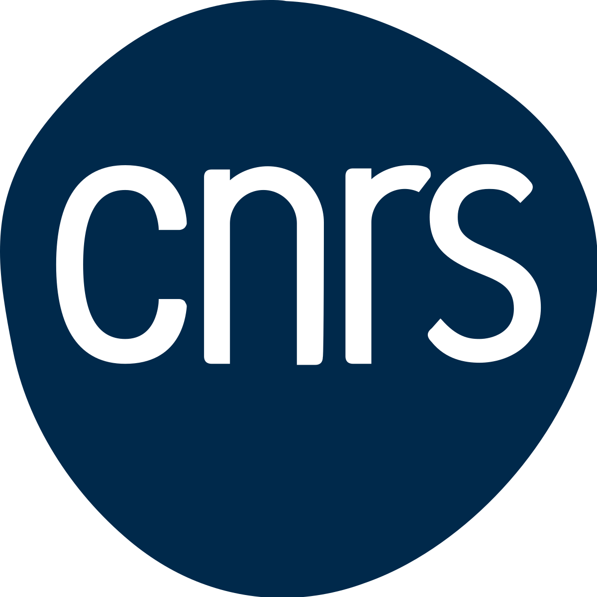

PhD Researcher · Data Scientist · Marie Curie Fellow
PhD candidate in underwater acoustics & seismology at CNRS–LMA, Marseille. Previously in bioacoustics and oceanographic data science. Building tools at the intersection of science and software.
I am a PhD candidate in underwater acoustics and seismology at CNRS–LMA in Marseille, working within a Marie Curie Doctoral Network. My research focuses on how sound propagates through the ocean and what it reveals about Earth's subsurface.
Before my PhD, I worked as a Data Scientist at the German Oceanographic Museum (DMM) and as a Guest Student at Woods Hole Oceanographic Institution (WHOI), where I developed expertise in bioacoustics and marine data analysis.
I hold an MSc in Data Science and a BSc in Statistical Sciences, both from the University of Bologna. I also volunteer as a Data Scientist for the NGO Centile Patagonia.

Underwater acoustics & seismology. Marie Curie Doctoral Network.
Woods Hole, MA, USA.
Open to collaborations, research discussions, and interesting project ideas.
Currently based in Marseille, France, working at CNRS–LMA.
Best reached by email. I usually respond within a few days.